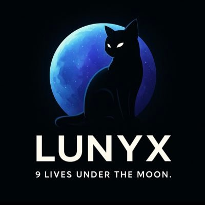

What is LUNYX?
LUNYX is more than a meme coin. Inspired by the myth of 9 lives, it rises under the moon to build a stealth, disciplined, and resilient community on Solana.
Roadmap — 9 Lives
- Life 1: Website + Telegram
- Life 2: Launch on Pump.fun
- Life 3: First 1,000 holders
- Life 4: NFT integration
- Life 5: CEX Listings
- Life 6: Community Events
- Life 7: Ecosystem Expansion
- Life 8: Strategic Partnerships
- Life 9: The Moon 🌙
Tokenomics
Supply: TBA
Liquidity: Locked
No team allocation